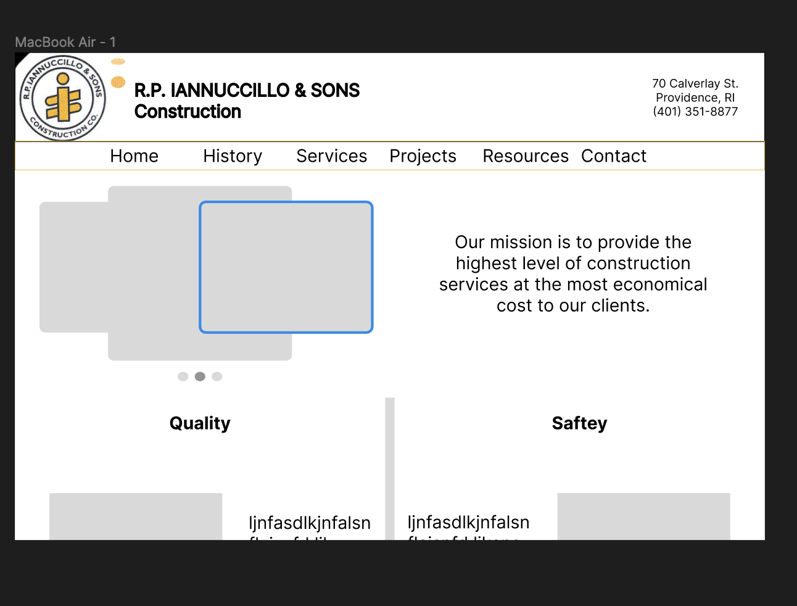
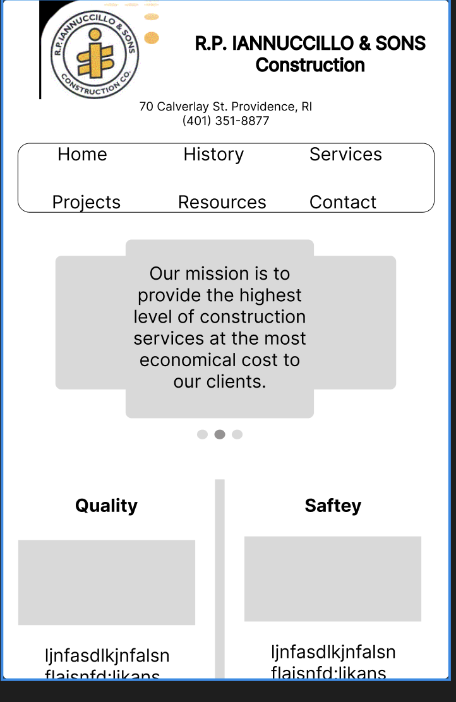
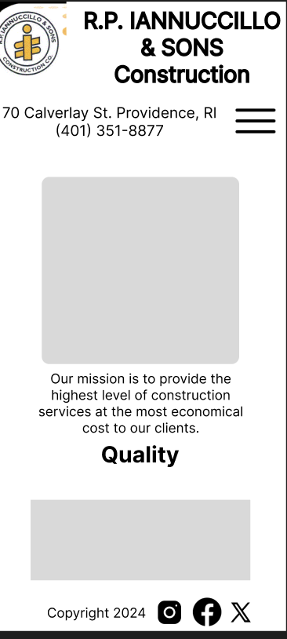
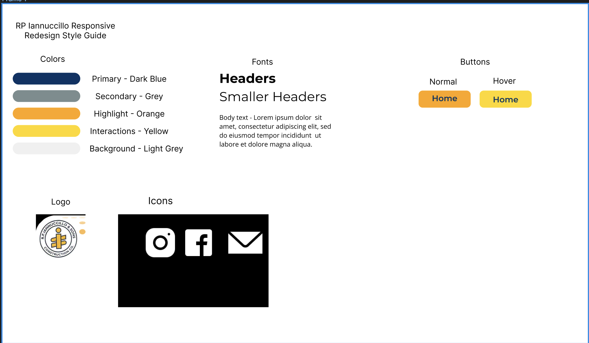
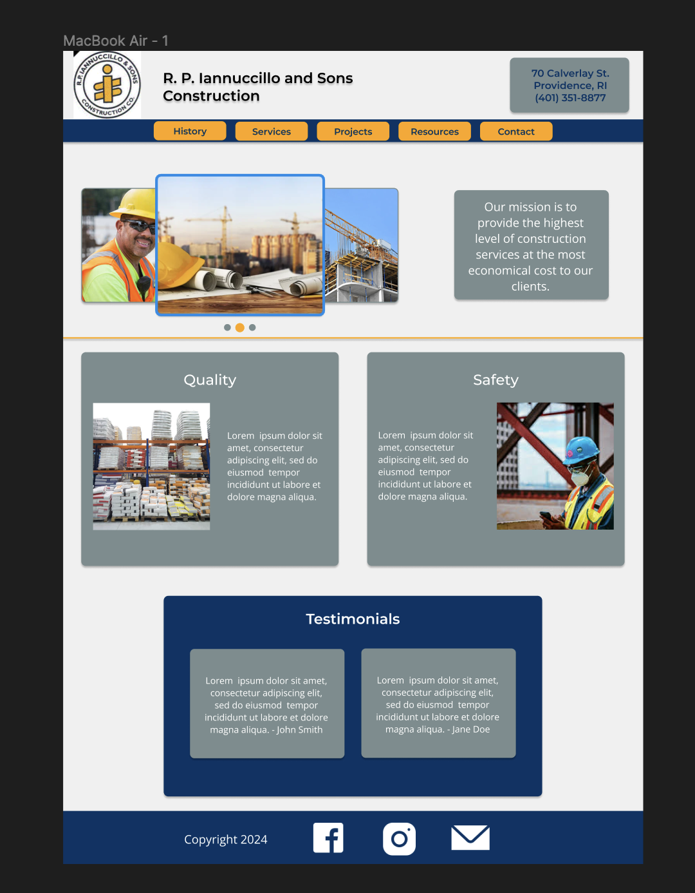
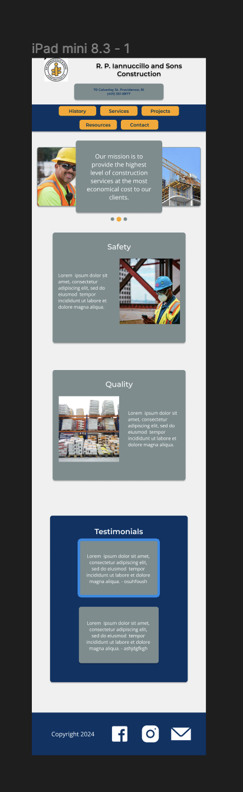
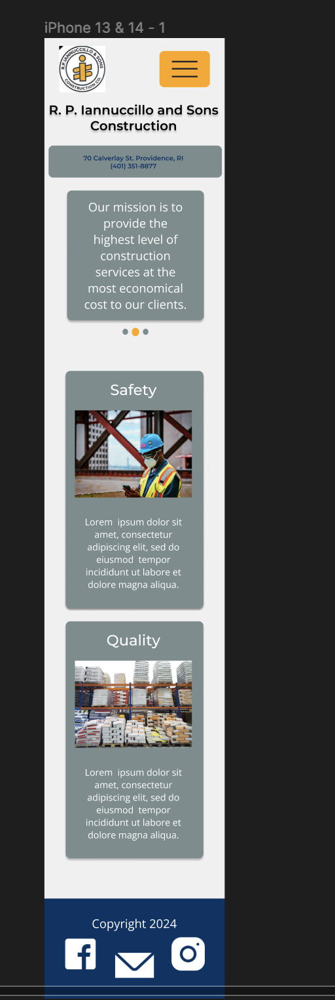

Introduction
The purpose of this project was to take a website with low accessibility and outdated ui design and redesign it to be more responsive, specifically to ensure that there were sizes available for mobile, tablet, and desktop. I chose a construction company based in Providence, RI at random. Their website was outdated and not responsive at all.
RP Construction Redesign RP Construction OriginalRP Construction Website Issues
The RP Construction website had a multitude of issues. At first glance, it appeared as though the site was cut in half, with only one side of the screen being taken up by content. There were also many contrasting problems, with some text being too small or difficult to read. Structure was another issue this site had, as there was none of it. A screen reader could not navigate the site well at all.
Redesign Process
After identifying the main challenges I wanted to address, I started with sketching out ideas I could possibly put into fruition. These sketches allowed me to create my low-fi wireframes, as pictured below.
  After completing my low fidelity wireframes, I moved onto a style guide to allow for easier design after I had choosen the elements I could recreate over and over again.
After the style guide was created, I was able to make my high fidelity wireframes, which included much more detail and color.
  Final Coding and Thoughts
After finishing my wireframes and planning, I was able to code using css and html the site that I wanted. I was unable to add some of the features I was hoping for, such as the dropdown menu and the working photo carousel.
I couldn't replicate what I created in Figma into css and html perfectly, but I am happy with the functionality of the responsiveness.
I added some extra photos and testimonials just to create a more engaging website